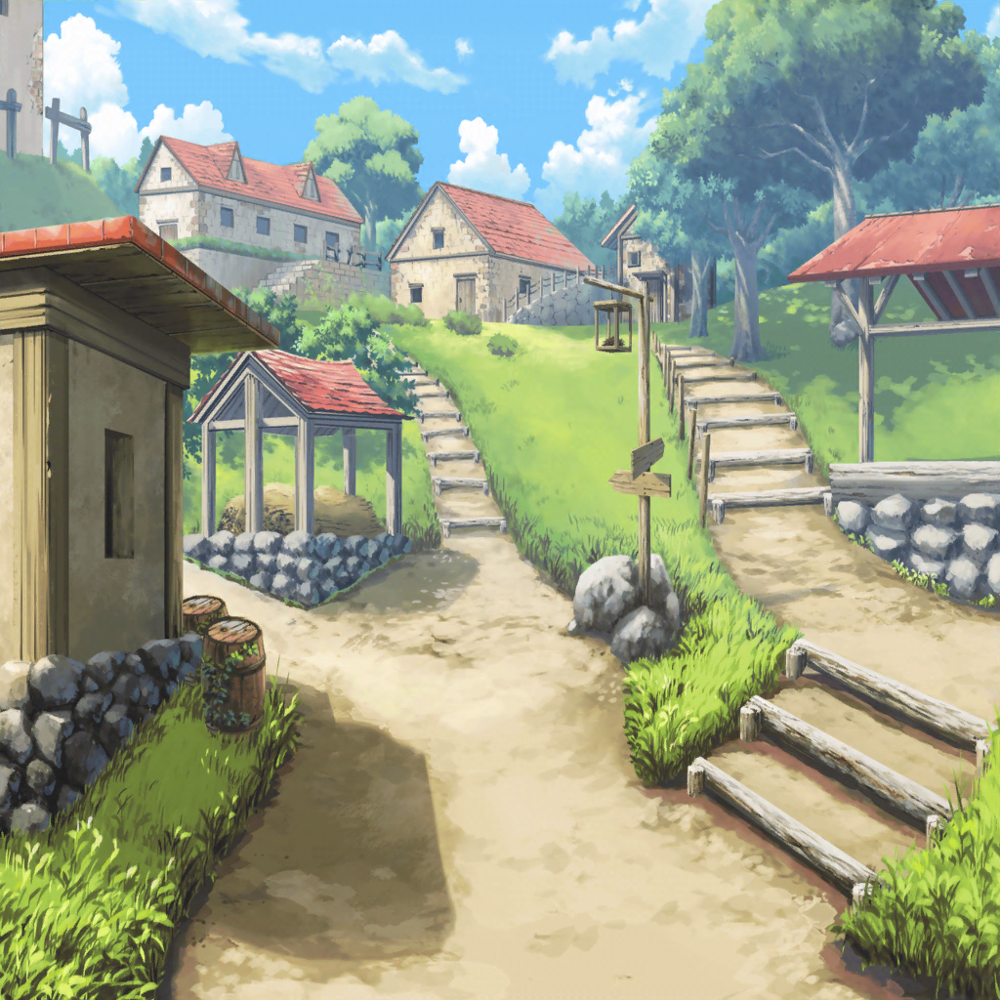

旅立ちの村
ジェイク
よく来てくれました……旅の方。
実は、折りいってお願いしたいことがあるのです。
この手紙を、鉱山のリンダに届けてもらえませんか？
リサ
へえー、この人がジェイクさん？
聖堕天使あこ姫
そうだよっ！
RinRin
ジェイクさんはこの場所から
リンダさんに何万通も手紙を出し続けてるんです
ユキナ
そんなに手紙を書いてどうするのかしら
RinRin
冒険者の数だけ必要だから、
仕方がないんですよ( ‘ω’ )
サヨ
手紙を受け取るにはどうすれば？
聖堕天使あこ姫
クエストの受注ボタンを押してくださいっ
サヨ
これね……『手紙をリンダに届ける』
ジェイク
本当ですか！？ ありがとうございます！
リンダは村を出て西に進んだ先の鉱山にいるはずです。
どうかよろしくお願いします……
リサ
これでオッケーだね☆
サヨ
それにしても……
目的地が村を出て西に進んだ先なんて、随分と曖昧なんですね。
もう少し話を聞いて具体的な場所を教えてもらいましょう
ジェイク
本当ですか！？ ありがとうございます！
リンダは村を出て西に進んだ先の鉱山にいるはずです。
どうかよろしくお願いします……
サヨ
……？
ジェイク
リンダは村を出て西に進んだ先の鉱山にいるはずです。
どうかよろしくお願いします……
サヨ
…………どうしてこの人は同じことしか言わないの？
聖堕天使あこ姫
NPCは同じことしかしゃべらないですよ？
ユキナ
NPC……？
RinRin
人が操作していないゲームの登場人物のことです
サヨ
……？ よくわからないけど、変わった人なんですね……
リサ
まぁとりあえず、その鉱山に行ってみようよ

アゼミチ村道
ユキナ
ここから鉱山にはどれくらいで着くのかしら
聖堕天使あこ姫
すぐそこですよっ！
最初のダンジョンだから、すぐ近くっ！
リサ
あれ？ ねえ、なんか光ってる草があるんだけど
RinRin
これは薬草ですね
リサ
薬草ってことは薬になるの？
RinRin
はい。これをこうすると……
リサ
わっ！
RinRin
できました、HP回復ポットです(`･ω･´)
リサ
えー！ すごいすごーい☆
RinRin
これはタンクの氷川さんに渡しておきますね、
もしHPが減ったら使ってください
サヨ
あの……HPというのは？
RinRin
生命力のことですよ。
モンスターから攻撃を受けたりすると
減っちゃうので(￣ω￣;)
サヨ
なるほど……ゲームは覚えることが多いんですね……
リサ
ねえねえ、そのHP回復ポットってアタシでも作れる？
RinRin
一番簡単なものなら大丈夫ですよ。やってみます？
リサ
うんやってみたい！
RinRin
じゃあ、この薬草を渡して……
あとは調合ボタンを押して作るだけです
リサ
へー簡単なんだね。それっ！
リサ
おおーできた〜☆
聖堕天使あこ姫
リサ姉、おめでと〜っ！
リサ
ありがとーあこ！
よーし、それじゃあ……！
聖堕天使あこ姫
えっ！？
リ、リサ姉……それは作り過ぎじゃ……
リサ
えー？ いっぱいあったほうがよくない？
ほら、みんなにあげるよ〜！
RinRin
あ、ありがとうございます。
ポットでアイテムスロットが
いっぱいです(；ﾞﾟ'ωﾟ')
聖堕天使あこ姫
あ、あははは……
ユキナ
それにしても、
そんなものを使わないといけないような場所へ行くのね
聖堕天使あこ姫
鉱山のモンスターは弱いけど、
たまーに天井が崩れたりするよね、りんりん
RinRin
そうだね……時々だけど岩盤の崩落はあります
リサ
そ、そんな危なそうな場所なの？
サヨ
リンダさんをそんな所に独りにする
ジェイクさんもひどい人ですね
RinRin
あ、でもあそこにはキラぽんも出るよ、あこちゃん
聖堕天使あこ姫
え、そうなのっ！？
ユキナ
キラぽん？
聖堕天使あこ姫
あこがずっと探してるレアモンスターなんですっ！
倒すとめっちゃレアなアイテムがもらえるんですけど……
なかなか見つけられなくて……
リサ
そうなんだ！ じゃあキラぽんも探しながらいこっか♪
聖堕天使あこ姫
うんっ！